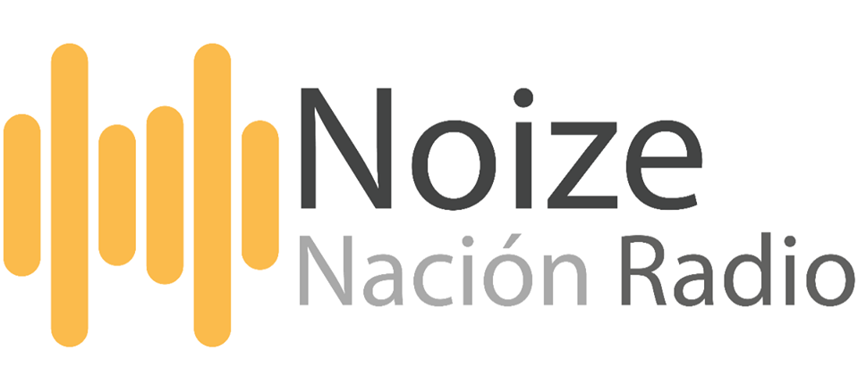

Inicio
Programas
Streams
Wiki
Directorio de Estaciones
Stats
Contacto
Streams
Wiki
Directorio de Estaciones
Stats
Contacto
AVISO DE SALUD: El nivel de volumen diario recomendado en auriculares es inferior a 85 dB durante un máximo de ocho horas. La configuración del Audio de Noize Nación excede el limite recomendado por que al escuchar por períodos prolongados puede provocar una pérdida auditiva permanente.

Radio Open Source que difunde lo mejor y más actual en música electrónica las 24 horas del día, Transmitiendo por internet desde Saltillo Coahuila México.
RCAST.NET
Retransmisores de Noize Nación Radio
Historia
"Proyecto que nace en Agosto de 2015 de la idea de llevar a los oídos de todo el mundo, lo mejor, más actual, conocido y desconocido en música electrónica, creada por
OrlandoHC (aka Masterk3y)
; Iniciando transmisiones en la pequeña ciudad de Nueva Rosita y posteriormente trasladándose a la ciudad de Saltillo en el estado de Coahuila, Noize Nacion es la única Estación de Radio 100% de Música Electrónica en el Norte de México. Al día de hoy se posiciona en los primeros lugares de popularidad y se retransmite en mas de 15 plataformas siendo del agrado de los radioescuchas a nivel mundial."
El flujo de audio principal de Noize Nación es soportado por
Stream Audio
y sus servidores ubicados en Riga, Letonia. Noize Nación utiliza transcodificación remasterizada en formato mp3 a 128kbps con Control de Ganancia Cuadrafonica Amplificada"
Si desea transmitir un evento masivo en vivo por Noize Nación y/o desea incluir sus sets de música electrónica envíe su
petición vía correo electrónico
Comparte Noize Nación
Contacto
Comparte Noize Nación